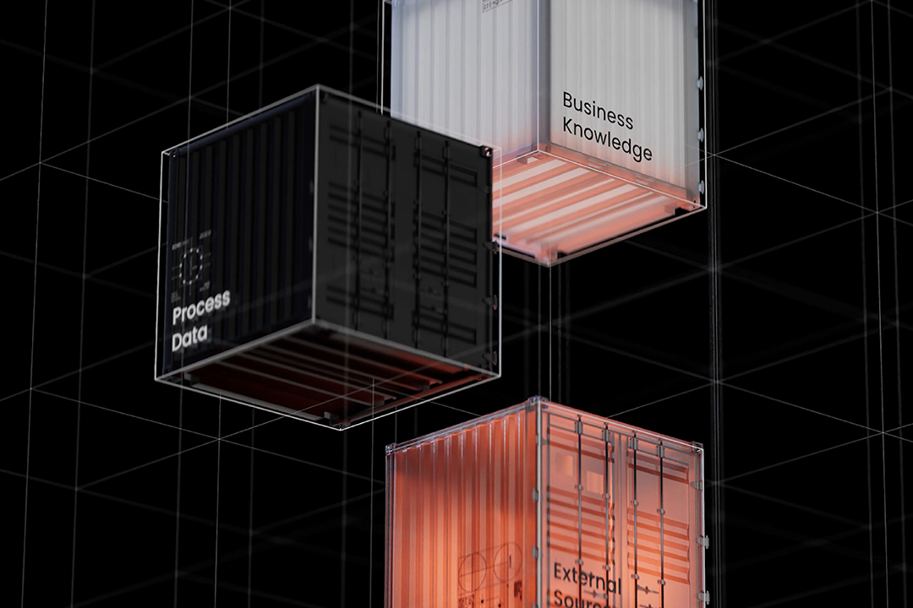

Make Enterprise AI work for your supply chain
Improve service levels
Improve on-time in-full delivery, reduce stockouts and improve supplier reliability.
Optimize working capital
Accelerate slow moving inventory, and reduce and reallocate excess inventory.
Contain costs
Optimize load consolidation and reduce operating costs and spot purchasing.
Give your Enterprise AI the essential context it needs to succeed

Operational resilience. It’s the dream supply chain leaders never stop chasing — and one that AI promises to help achieve. But without an understanding of how the supply chain flows and the ability to improve it, the cycle of reactivity continues and AI initiatives will fail to deliver.
The Celonis Context Model combines process, artificial, system, and decision intelligence to give you a common language for understanding and improving how your supply chain runs. It’s system-agnostic, and unbiased. The result? A supply chain augmented by AI that has what it needs to be effective – driving connected decision-making and resilient operations.
Some of the world’s leading companies use Celonis to enable AI across their supply chains
30%
Reduction in throughput time

20%
Inventory reduction
1000s
Of hours saved
Ready to learn more?
Get the latest supply chain transformation insights here: